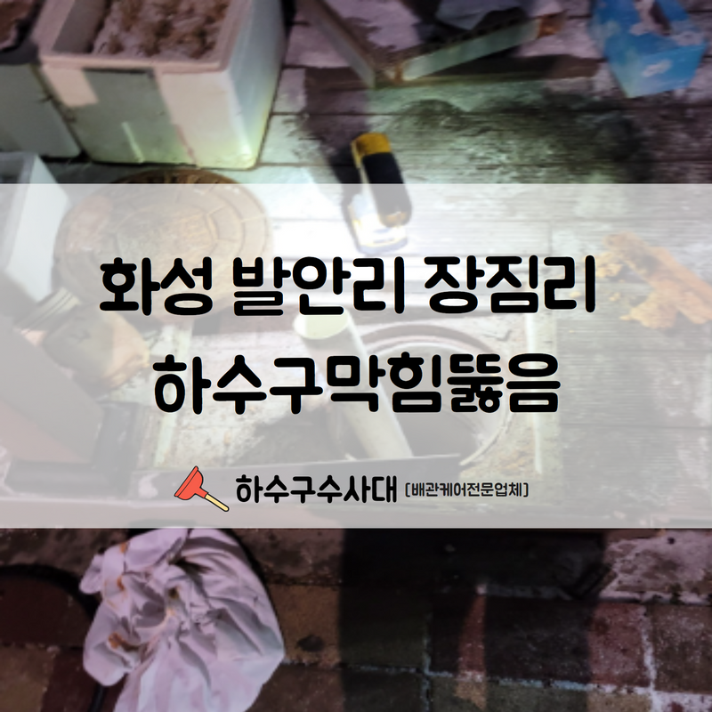
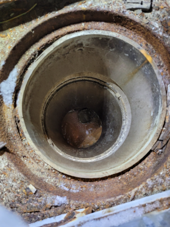
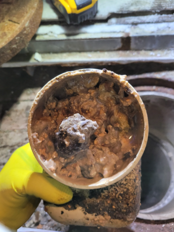
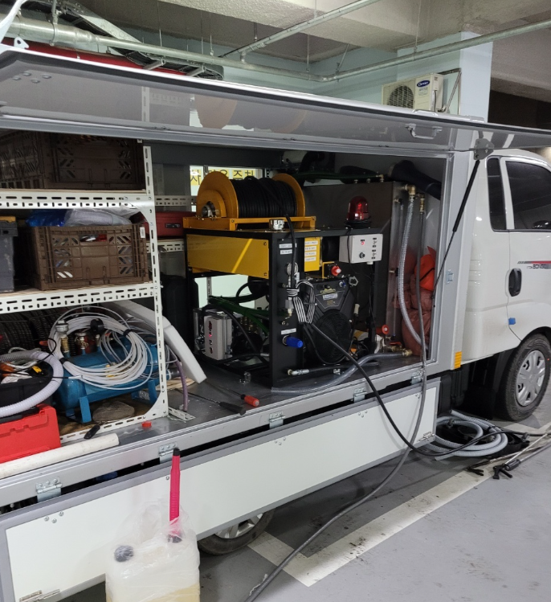
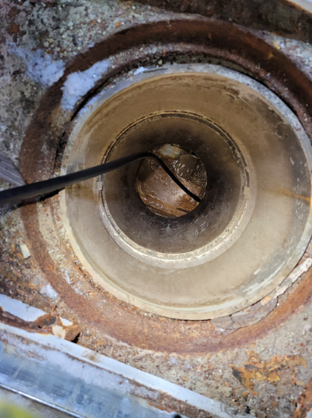
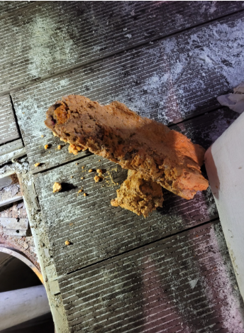
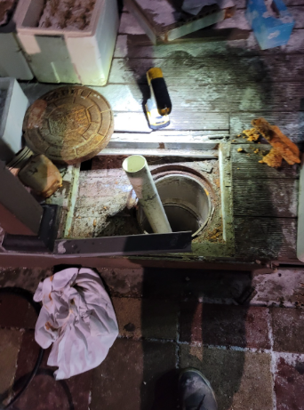

🏠 화성 발안리 장짐리 하수구막힘뚫음 완벽한 뚫림 확인과 함께 해결 완료하였습니다!
화성 발안 하수구막힘 전문 시공 후기

📋 작업 개요
- 위치: 화성 발안, 발안, 화성
- 서비스 유형: 하수구막힘, 배관막힘, 맨홀막힘, 뚫는업체, 고압세척
- 작업 일시: 2022. 8. 17. 23:56
- 업체명: 하수구수사대 (010-5615-2118)
🔍 문제 상황
안녕하세요.하수구수사대 입니다.반갑습니다.
화성 발안리 장짐리 하수구막힘뚫음 현장 살펴보겠습니다.
해당 현장은 공장 및 회사로 운영되고 있는 건물이었습니다. 이러한 곳은 많은 사람이 이용하는 공간인 만큼 피해가 더 크다고 할 수 있습니다.
고객님께서 제보 주신 곳의 하수구는 모두 하나의 배관으로 이어져 있었습니다.
생활하면서 배수구 등을 통해 내려보내는 다양한 이물질과 찌든 때는 물에 흘러 배수되지는 않는 편입니다. 배관 내부에 그대로 남아 흡착되는 경우도 발생한다고 할 수 있는데요. 이렇게 흡착이 된 이물질 및 찌든 때와 음식물이 방치된다면 부패하기 시작하는 것입니다.

🔎 원인 분석
💡 전문가 진단: 화성 발안리 장짐리 하수구막힘뚫음 현장 살펴보겠습니다.
악취는 배관을 타고 올라오는 냄새일 가능성이 높은데요.
화성 발안리 장짐리 하수구막힘뚫음 현장에서는 단순히 냄새만으로 문의 주신 것은 아니었습니다. 자주 사용하는 배수구에 물이 배수되지 않고 속도가 점점 느려지는 현상도 함께 발생했다고 하셨어요.
하수구에 물이 내려지지 않는 현상이 발생한다면 장비를 이용해서 이물질을 제거해 주어야 하는데요. 하수구를 뚫는 장비도 여러 가지가 있는 편이에요. 외부에서 고압세척을 하는 현장이었기에 스프링 기계 및 석션기를 이용해서 뚫어주어야 하는 것입니다.
완료된다면 물을 배수시키면서 물이 내려가는지 확인해야 하는데요.
외부로 나가 맨홀 곳곳에 고압세척 작업을 해보는 것이 매우 중요합니다. 이러한 고압세척은 어느 정도 규모가 있는 건물에서만 한다고 생각하는 경우가 많지만 배관이 있는 모든 공간에서는 필수인 작업이라고 할 수 있는데요.

🔧 작업 과정
그리고 어느 정도 이물질이 쌓일수 밖엔 없을 것입니다. 그러므로 오염물질을 제거하지 않으면 일상생활에서 더욱 자주 발생할 것이기에 이러한 상황을 예방하려면 정기적인 고압세척을 해주어야 해요. 물론 고압세척이 적은 비용의 시공은 아니라고 할 수 있습니다.
미리 예방이 가장 중요합니다.
하수구가 막히고 나서 시공으로 뚫고 나서 복구하는 비용 등을 종합적으로 생각한다면 미리 예방하는 것이 더 경제적이라고 할 수 있어요. 음식물 찌꺼기나 기름때가 자주 발생하는 곳에서는 1년에 한, 두 번 이상 정기적으로 진행해 주는 것이 좋습니다.
하수구가 막히기 전 관심을 가지고 관리하여 예방하는 것이 도움이 되는데요. 고압세척을 진행하기 위해 노즐과 호스를 세팅하고 나서 배관 내부로 삽입하고 작업을 시작해야 합니다. 처음에는 많은 구정물 및 이물질이 나오지만, 점차 호전되는 모습을 확인할 수 있었습니다.
숙달된 기술자들이 작업을 진행합니다.
작업 자체가 쉽게 보이는 작업처럼 보일 수 있으나, 작업자의 경력이나 작업 숙달 정도에 따라 많은 차이가 발생하는 시공에 해당한다 볼 수 있습니다. 하수구 막힘이 발생하였을 때에는 하수구수사대 같이 전문적인 업체에 의뢰하시는 것이 현명한 선택이라고 할 수 있습니다.
방치된 덩어리가 제거되는 과정이기에 악취도 많이 발생하고 주변으로 이물질이 많이 튀기도 하는데요, 그러므로 유동인구가 없는 시간대에 작업해야 합니다.
지금까지 하수구수사대에서 화성 발안리 장짐리 하수구막힘뚫음


✅ 작업 완료
관련 사례 살펴보았습니다. 이상 관련 내용 마무리하도록 하겠습니다.
경기도 화성시 향남읍 상신하길로298번길 7-11 8층 805호




⚠️ 하수구 배관 막힘 예방 및 관리 가이드
- ✅ 머리카락, 비닐, 물티슈 등 물에 분해되지 않는 이물질은 하수구 유입을 절대 금지해 주세요.
- ✅ 하수구 거름망을 씌우고 모여진 이물질은 주기적으로 쓰레기통에 바로 비워주셔야 합니다.
- ✅ 배관 노후가 심할 경우 이물질이 더 쉽게 걸리므로 주기적인 배관 세척(고압세척 등)을 권장합니다.
- ✅ 작업 후 1년 이내 재발 시 하수구수사대에서 무상 A/S 보증 서비스를 제공합니다.
💡 핵심 정리
- 확실한 장비 작업(내시경 점검 및 샤프트 스케일링)으로 원인을 뿌리 뽑습니다.
- 작업 후 1년 이내에 동일한 부위 재발 시 100% 무상 A/S 서비스를 보장합니다.
- 서울 · 경기 · 인천 전 지역에 24시간 언제든 긴급 출동할 수 있도록 항시 대기 중입니다.
❓ 자주 묻는 질문 (FAQ)
🚨 화성 발안 하수구막힘 문제로 고민이신가요?
정확한 원인 진단과 확실한 시공으로 재발 없는 해결을 약속드립니다.
24시간 긴급 출동 | 서울 · 경기 · 인천 전지역 | 1년 내 재발 시 무상 A/S